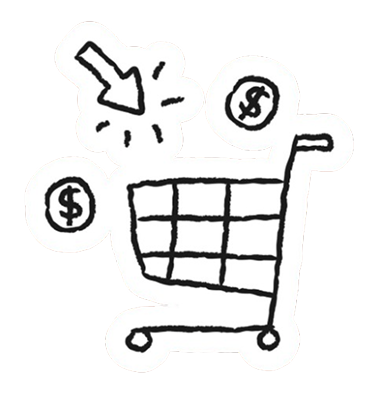

Vícios
- “Tudo que é em excesso faz mal”, “A diferença entre o remédio e o veneno é a dose”. Desde cedo, crescemos ouvindo isso. Certas vezes, convivemos com pessoas dependentes no nosso dia a dia, mas raramente vemos ou ouvimos falar de um desdobramento científico do porquê isso acontece, por que nosso cérebro cria dependências? Agora que os conceitos vistos anteriormente ganharam práticas, e para entendermos dependências, primeiro vamos separá-las em dois grupos: químicas e não químicas.
- Químicas, sendo aquelas que são dependências de substâncias, como álcool. Não químicas são dependências comportamentais, como jogar. A dependência química é uma síndrome, causada pelo mau uso de uma ou mais substâncias químicas, que podem alterar o estado mental. Se fosse para sintetizar, poderíamos dizer que é causada quando a substância atravessa a barreira hematoencefálica e consegue chegar às redes de neurônios e, portanto, consegue alterar o que acontece nas conexões neurais. Todavia, vamos nos aprofundar um pouco mais…
Drogas afetam a maneira como os neurônios se comunicam e o sistema dopaminérgico de recompensa. Algumas drogas agem nos neurônios, ligando-se a eles e os ativando; outras agem de forma direta ou indireta no sistema de recompensa. Podemos usar de exemplo a cocaína e a anfetamina, ambas agindo na fenda do sistema, fazendo uma produção mais concentrada de dopamina acontecer. Outras substâncias agem da mesma maneira, fazendo com que quantidades exuberantes de neurotransmissores sejam liberadas, ou impedindo que a reciclagem deles seja feita, alterando os transportadores e a comunicação normal entre neurônios.

A felicidade e prazer que sentimos ao usarmos substâncias externas se dão por esses altos picos de liberação de neurotransmissores, com destaque para endorfina e dopamina. Entretanto, quando olhamos individualmente para certas substâncias químicas, podemos destacar especificamente certos neurotransmissores.
Cocaína
- Estimula diretamente o sistema e recompensa. Bloqueia a bomba de recaptação da dopamina, fazendo com que mais do neurotransmissor fique na fenda sináptica, aumentando a concentração e o tempo de ação da substância.
- Resulta em euforia e prazer muito maiores que o normal.
- Afeta também o sistema de neurotransmissão de serotonina, que, além de responsável pela modulação do humor e controle de impulsos, também pode estimular o sistema de recompensa. A droga faz ação nesse sistema por meio do bloqueio da recaptação de serotonina.
Anfetamina/Ecstasy
- Similar à cocaína, essas drogas também atuam no sistema de recompensa e no sistema serotoninérgico (ecstasy) por meio da indução de liberação intensa de dopamina.
- Inibe a recaptação, porém em quantidades menores que a cocaína.
- Os efeitos alucinógenos se dão graças ao estímulo do sistema serotoninérgico.
Nicotina
- Estimula o sistema de maneira indireta.
- Tem capacidade de se ligar com o sistema colinérgico (acetilcolina);
- A ligação aos receptores nicotínicos libera glutamato, que estimula a produção de dopamina no sistema de recompensa.
- Inibe o sistema GABA, sistema responsável por impossibilitar todos os outros sistemas de atuarem. Ao bloquear GABA, a sensação de bem-estar e prazer proporcionada pela nicotina é prolongada.

Opiáceos
- Os receptores tipo um de opióides são os encarregados da sensação de bem-estar durante o consumo da droga.
- Atuam de maneira indireta no sistema de recompensa, por meio de duas ações.
- 1. Ligação dos opiáceos com os receptores opióides dentro do sistema, o que libera dopamina.
- 2. O sistema GABA tenta impedir essa liberação de dopamina, entretanto a droga inibe o sistema GABA.
Álcool
- Atua de maneira indireta sobre o sistema, por meio de glutamato, GABA, opióide e serotonina (todos capazes de afetar o sistema e recompensa).
- Inibe o glutamato e estimula GABA, produzindo uma sensação de relaxamento.
- Por meio da serotonina, é passada uma sensação de bem-estar para o indivíduo, o que o faz querer consumo frequente da bebida.
Outros Vícios
Comportamentos aparentemente inofensivos do dia a dia também podem ser perigosos. Sobre dependências não
químicas, podemos conceituar que são comportamentos compulsórios, que causam principalmente problemas
sociais e psicológicos no indivíduo. Não tão ensafadas quanto dependências químicas, mas com um nível de
gravidade que não fica muito atrás de dependências por uso de substâncias.
Atuam de forma muito parecida com a dependência química, por meio do estímulo indevido do sistema de
recompensa. Você desenvolve um hábito que, a princípio, é inocente e prazeroso, mas, aos poucos, começa
a praticar com mais frequência, desejando cada vez mais a liberação de dopamina que ocorre durante a
prática, e, quando você menos percebe, está dependente daquilo.
Podemos listar vários comportamentos que se tornam compulsões:

Compras
Diferentemente da dependência química, aqui as consequências sociais prevalecem. Um jogador ou comprador compulsivo se endivida e, por vezes, pode perder itens que demoraram anos para serem conquistados para pagar dívidas.
Jogos de azar
Os jogos de azar engajam o jogador na esperança de obter a próxima grande recompensa. Além disso, jogos de azar são geralmente patrocinados por influenciadores gigantes e se utilizam de técnicas visuais e sonoras para chamar atenção.
Pornografia
Pessoas viciadas em pornografia relatam ter distorção de imagem, esperando se relacionar com corpos irreais. Além disso, o efeito da dopamina pode durar até 10 horas no cérebro.
Uso de Telas
Em casos de uso de tela, você, aos poucos, vai perdendo o esforço em certos quesitos, prefere informações rápidas ao invés de pesquisar, não estuda questões sociais e políticas, pois tem preguiça (e, consequentemente, não sabe quem é e o que apoia na hora de apertar botões nas urnas), deixa-se levar por qualquer tendência, segue qualquer influenciador. A falta de pensamento crítico é cada vez mais comum na sociedade. Por meio da dependência de telas, que traz informações rápidas a cada minuto, adquirimos preguiça de querer pensar individualmente, preguiça de sermos seres próprios e autênticos. .

Transtornos Alimentares
A relação com a comida de muitas pessoas pode variar entre uma restrição excessiva de calorias, até compulsão de muitos alimentos e ciclos entre esses dois estados. O cérebro age como se essa relação com a comida fosse a única forma de aliviar seus sentimentos, seja para emagrecer e “ficar mais bonito” ou comer para se sentir aliviado.

Sexo
A compulsão sexual/vício em sexo ou masturbação não se trata de libido alta, mas da busca dos sentimentos bons que o orgasmo traz, que no fim, apenas leva ao vazio e um “falso prazer”. Este pode ser um sintoma do Transtorno do Comportamento Sexual Compulsivo, que envolve fantasias intensas e que consomem um tempo excessivo do seu dia, se tornando uma relação não-saudável com o sexo.
Em todos há algo similar, normalmente, uma sensação de vazio dentro do indivíduo que só é preenchida quando tais hábitos são praticados. Ao comprar na internet, apostar, passar horas rolando o feed do Instagram, comer até passar mal… Tudo isso ativa o sistema de recompensa, liberando a dopamina que traz a sensação de prazer, bem-estar. Assim, só somos motivados pela sensação de continuar os maus hábitos.
O que é comum entre os dois tipos? A dependência ocorre graças à estimulação do sistema de recompensa, que, ao retornar sensações boas, ensina o nosso cérebro de que aquela atividade é boa e deve ser repetida, e, conforme essas repetições acontecem, a dependência é desenvolvida. Assim, o cérebro se ajusta, produzindo menos neurotransmissores ou diminuindo o número de receptores, diminuindo também o prazer que a pessoa sente em atividades que naturalmente liberam os neurotransmissores.
O indivíduo então entra em um ciclo vicioso, sentindo-se desmotivado para fazer coisas que antes lhe davam prazer, e precisando usar quantidades cada vez maiores da droga para se sentir satisfeito.
Como sair das dependências
O processo para reconhecer uma dependência normalmente é delicado e exige atenção, mas não se faz menos necessário por causa disso. O ponto principal está em olhar para si mesmo e se perguntar o quanto aquele hábito está afetando você e as pessoas ao seu redor. Porém, um diagnóstico oficial é feito somente por um especialista, então após identificar uma possível dependência, procure um profissional que possa te ajudar.
Feito o diagnóstico, é analisada a gravidade da dependência e então o tratamento pode ser iniciado, utilizando de remédios, terapia, grupos de apoio, e claro, mudanças de hábito.
Obviamente não é um processo fácil, exige esforço integral do indivíduo e apoio das pessoas ao seu redor. Dependências comportamentais são um pouco mais complicadas de vencer, afinal você pode escolher não consumir mais álcool e parar de fumar, mas não pode evitar navegar pela internet ou nunca mais fazer compras, exige paciência e autocontrole, mas é possível! Para finalizar, é bom destacar a importância de não baixar a guarda, mesmo depois de a dependência estar estabilizada, para evitar ao máximo qualquer chance de recaídas.
Dentre as dicas para ajudar no processo de vencer dependências podemos destacar:
- Comece uma nova rotina aos poucos! Explore novos hobbies, faça exercícios físicos, passe tempo ao ar livre, ocupe sua mente para ajudar no processo.
- Tenha uma atitude de escape. Uma atividade que alivie o seu estresse, te traga conforto. Para alguns é yoga, para outros é ler…. as possibilidades são muitas, explore e descubra!
- Aprenda a identificar gatilhos, e evite-os. Mantenha-se afastado daquilo que desencadeia vontade de voltar para a dependência.
- Frequente grupos de apoio. Encontre um lugar que ofereça ajuda a pessoas com uma trajetória semelhante à sua.
- Busque ajuda profissional! Com destaque para terapia, que auxilia na mudança de pensamentos e hábitos. Com acompanhamento médico também é possível iniciar um tratamento com remédios prescritos pelo profissional.